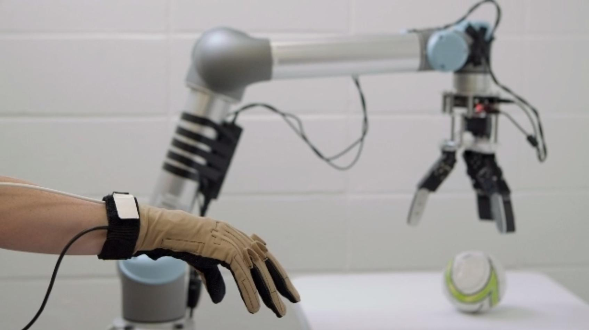
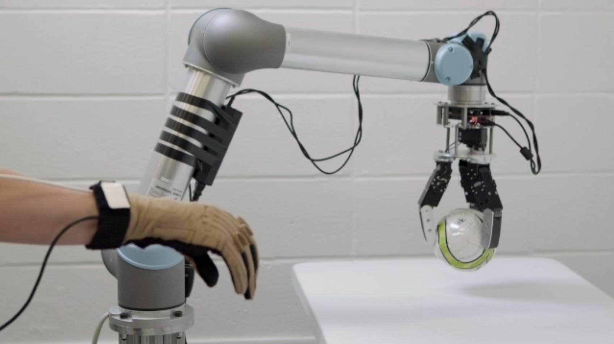
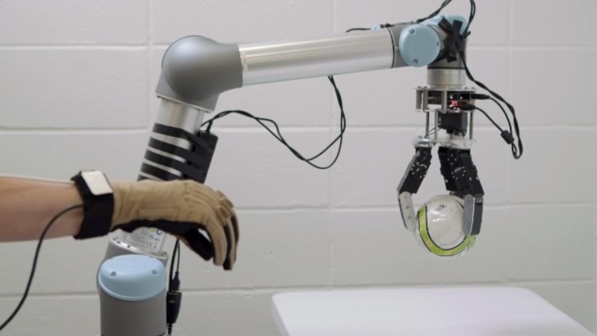
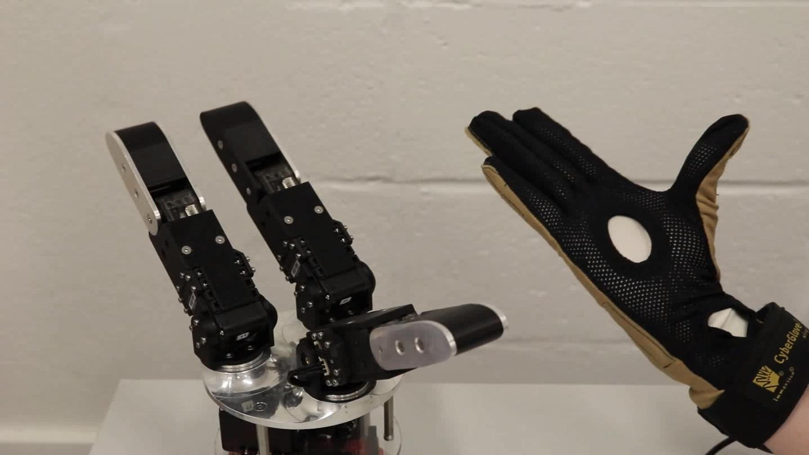
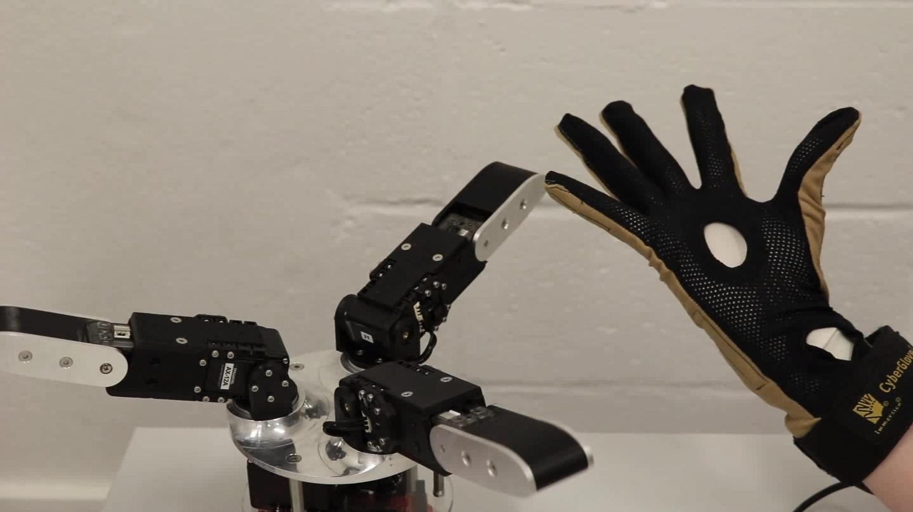
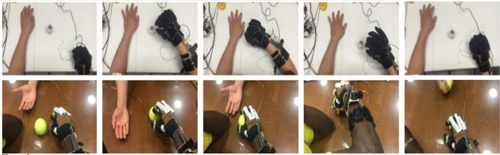
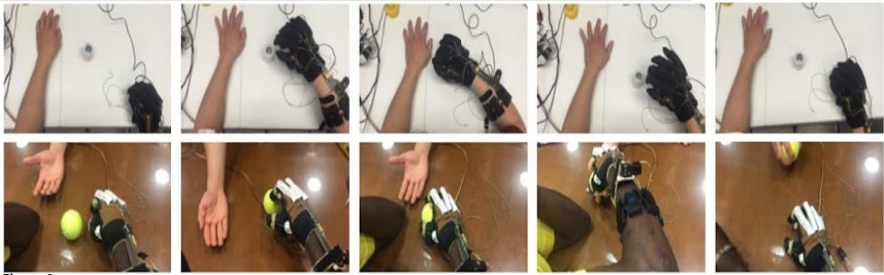
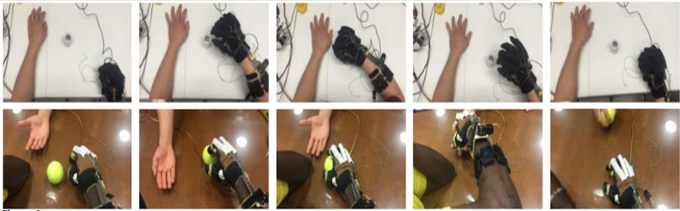

Welcome! I am a postdoctoral researcher in Robotic Manipulation and Mobility Lab at Columbia University, directed by Dr. Matei Ciocarlie. My background is in biomedical and mechanical engineering, specifically in robotics. My research focuses on using machine learning to predict human intent and to create intuitive human-machine interfaces. I create interfaces for both teleoperation and wearable rehabilitation robotics.
Developed a subspace relevant to teleoperation which allows novice users to teleoperate non-anthropomorphic hands using the natural motion of their own hands. In experiments, novice users were able to pick and place objects faster with the teleoperation subspace than with state-of-the-art methods. Teleoperation using the subspace can be controlled using an instrumented dataglove or forearm EMG signals.





EMG Control for the MyHand Rehabilitation Orthosis
Using machine learning and classification algorithms to predict human intent to open or close the hand using EMG as input. Algorithm is combined with the MyHand orthosis and tested on chronic stroke subjects. Previous clinical studies showed that the machine learning algorithm was effective in conjunction with an exotendon device in determining stroke subjects' intent and was able to enable functional tasks. Ongoing testing focuses on determining the rehabilitative benefits of the EMG control and the exotendon orthosis.

Papers: Multimodal Sensing and Interaction for a Robotic Hand Orthosis, 2019 EMG pattern classification to control a hand orthosis for functional grasp assistance after stroke, 2017
FIELDS OF INTEREST
Intuitive human-machine interfaces using natural human motions as control inputs
Human in the loop robotics, teleoperation, robotic manipulation in unstructured environments, shared autonomy
Wearable, assistive, and rehabilitation robotic controls, particularly those using biological signals (EMG, EEG) as control inputs
EDUCATION
Columbia University, New York, NY
Ph.D in Mechanical Engineering Expected 2020
Advisor: Matei Ciocarlie
M.S. in Mechanical Engineering February 2017
University of North Carolina, Chapel Hill, NC
B.S. in Applied Sciences (Biomedical Engineering) May 2014
WORK EXPERIENCE
ROAM Laboratory, Department of Mechanical Engineering, Columbia University Graduate Research Assistant 09/2015 – Present
Creating control algorithms for a rehabilitation robotic exoskeletion for stroke subject, leveraging various classification and regression algorithms to predict human intent based on forearm EMG
Using data reduction and linear algebra to create teleoperation control algorithms which can generalize to many non-anthropomorphic robotic hands
Head of Digital Content/Social Media 09/2018-Present
Maintain the association’s social media presence and website
Saturday Science Starters Chair 09/2017 – 09/2018
Organized workshops for middle schoolers to perform supervised science experiments
Phi Sigma Pi Honors Fraternity
Secretary 09/2013 – 09/2014
MENTORSHIP/TEACHING
Teaching Assistant – Introduction to Robotics Fall 2018 MECEE4602 taught by Dr. Ciocarlie at Columbia University
The class is a graduate level introduction to robotics, topics include forward and inverse kinematics, cartesian control, stochastic motion planning and Bayesian state estimation
Responsibilities include holding office hours, creating coding homeworks (both solutions and starter code), and creating autograding scripts which allow students to test their code before submission and enable efficient grading, and maintaining SVN repositories for the students to submit their code
Homeworks and autograding scripts created for the class all involved simulated robots, robot visualization in RViz, ROS (topics, tf, publishers, subscribers, services, etc)
Mentored a NSF REU Summer Scholar Summer 2018 Abigail Herschman, University of South Carolina
Teaching Assistant – Applied Robotics: Algorithms and Software Fall 2017 MECEE4603 taught by Dr. Ciocarlie at Columbia University
The class introduces the students to the programming techniques, algorithms, and theories behind robotic controls
Responsibilities include holding office hours, creating solutions to involved coding homeworks, writing autograding scripts which allow for efficient grading, moderating online forums, and helping students debug their code
Homeworks for the class involved simulated robots, RViz, and various aspects of ROS
PUBLICATIONS
Peer Reviewed Journal Publications
Park, S., Meeker, C., Weber, L. M., Bishop, L., Stein, J., & Ciocarlie, M. (2018). Multimodal Sensing and Interaction for a Robotic Hand Orthosis. arXiv preprint arXiv:1808.00092. In press, RA-L RAS Special Issue.
Peer Reviewed Conference Publications
Meeker, C., & Ciocarlie, M. (2018). EMG-Controlled Hand Teleoperation Using a Continuous Teleoperation Subspace. arXiv preprint arXiv:1809.09730. Under review.
Meeker, C., Rasmussen, T., & Ciocarlie, M. (2018). Intuitive Hand Teleoperation by Novice Operators Using a Continuous Teleoperation Subspace. In Rehabilitation Robotics (ICORR), 2018 International Conference on. IEEE.
Meeker, C., Park, S., Bishop, L., Stein, J., & Ciocarlie, M. (2017, July). EMG pattern classification to control a hand orthosis for functional grasp assistance after stroke. In Rehabilitation Robotics (ICORR), 2017 International Conference on (pp. 1203-1210). IEEE.
Conference Abstracts/Posters
Park, S., Meeker, C., Weber, L. M., Bishop, L., Stein, J., & Ciocarlie, M. (2018, October). Multimodal Intent Inferral with a Wearable Hand Orthosis. Intelligent Robots and Systems, 2018 IEEE/RSJ International Conference on.
Meeker, C., Park, S., Bishop, L., Stein, J., & Ciocarlie, M. (2017, July). EMG Control for a Hand Orthosis: from Standalone Training to Device Integration and Task Execution. In Rehabilitation Robotics (ICORR), 2017 International Conference on. IEEE.
SERVICE/OUTREACH
Speaker for the IDEAL School's Robotics Club “Inside Engineering” Columbia SEAS visit, Spring 2018.
Invited speaker at the Family Astronomy Night Series hosted by the Intrepid Sea, Air and Space Museum, part of a team presenting our work on rehabilitation robotics to audience of children and their families, July 2017.
Speaker for the Columbia Inside Engineering program, hosting women high school students for hands-on demos of engineering projects, Spring 2017.
Group leader at Girls Science Day, led middle school girls during science camp experiments, Fall 2017
After-school teacher at Robogals, teaching 4th grade girls robotics, Fall 2015-Fall 2016
SKILLS
Strong object-oriented programming skills in python
ROS, SVN, scipy, sklearn, MATLAB, Solidworks
Proficient using Windows, Linux and Unix environments
Proficient using Microsoft Office, excellent written and verbal communication

 
